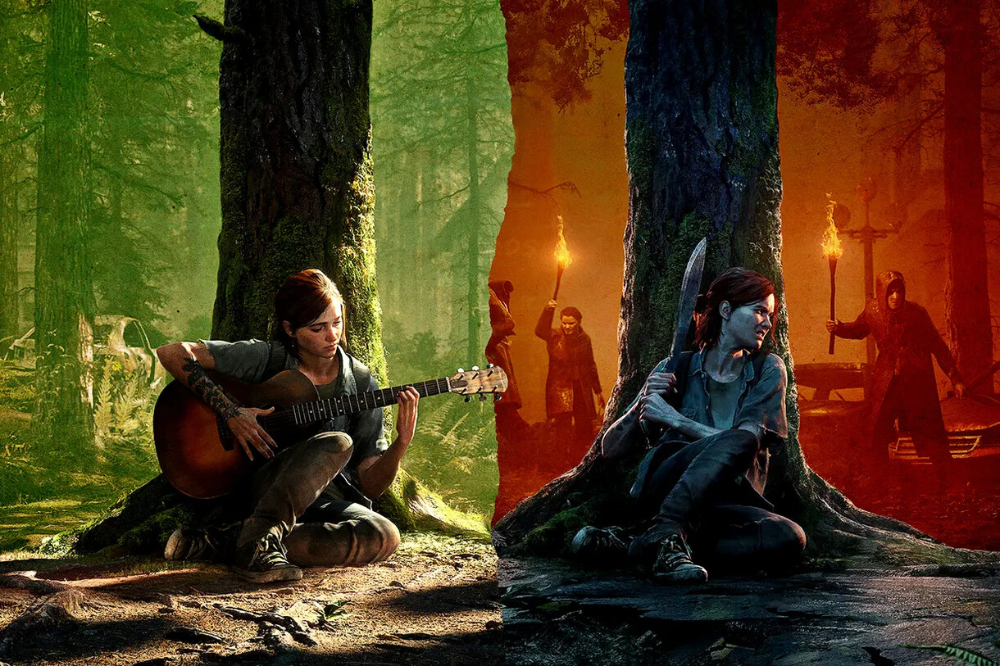
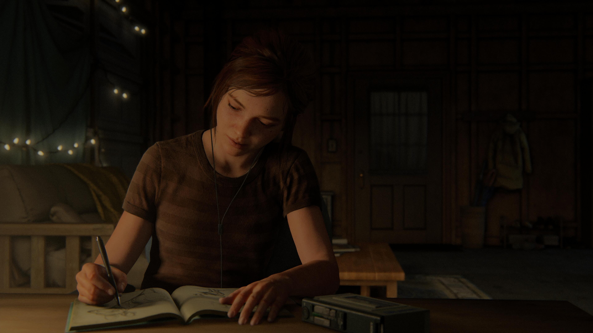
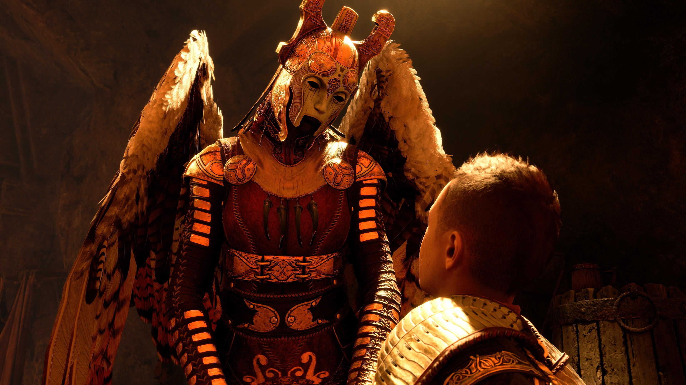
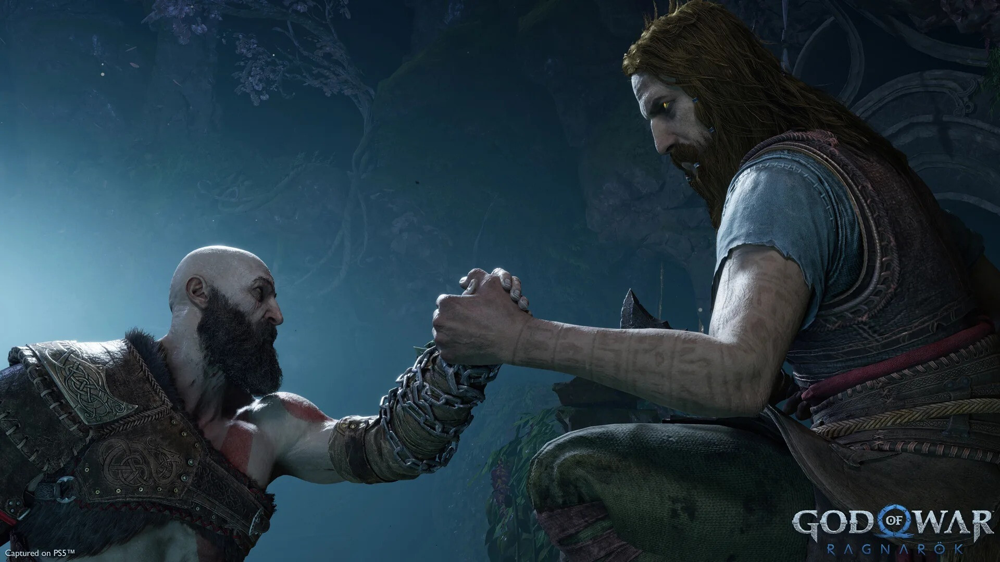
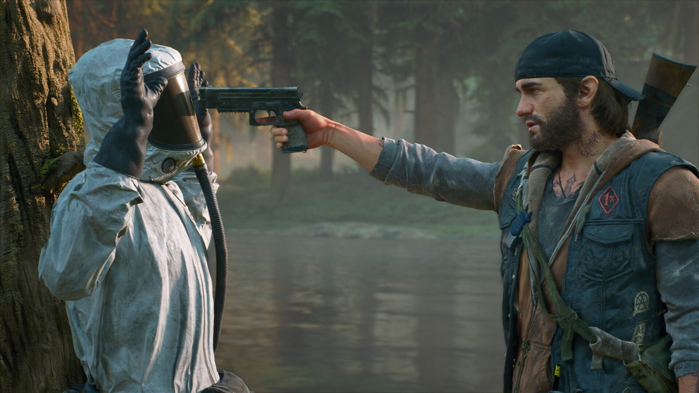
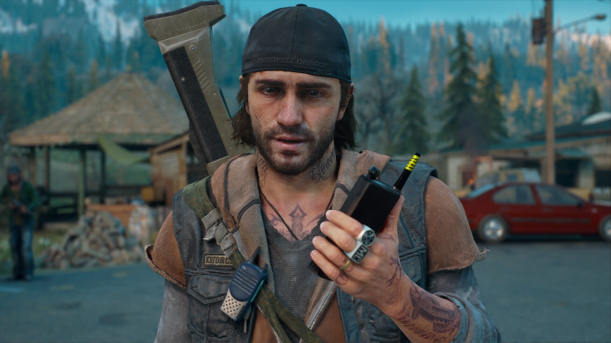
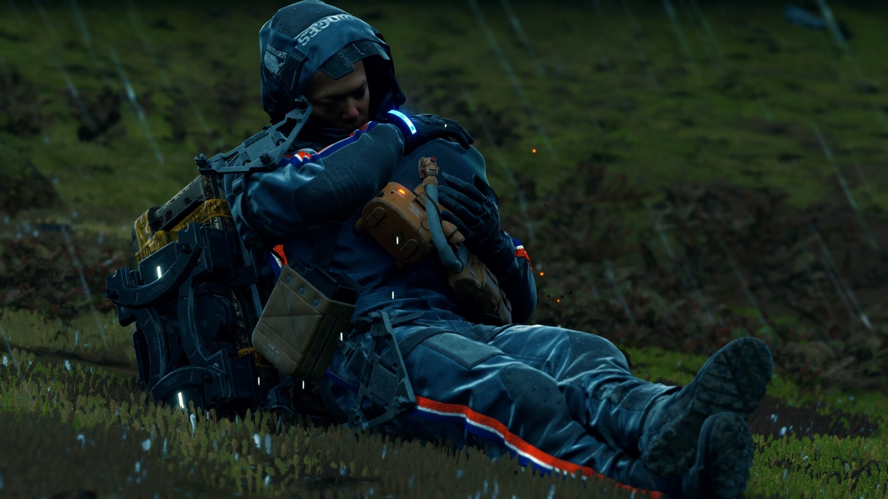
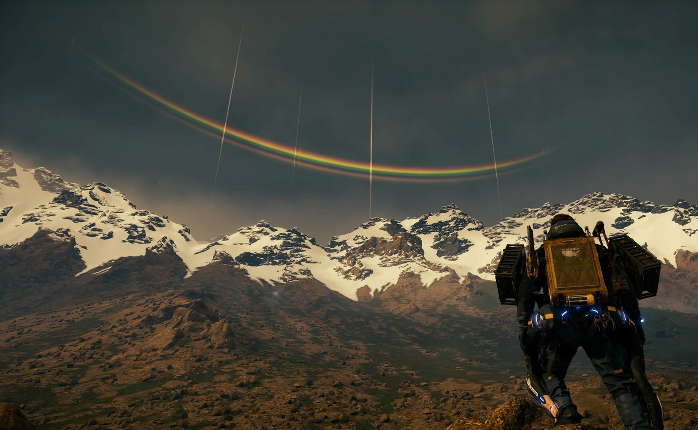

Обзор
The Last of Us Part II
The Last of Us Part II была анонсирована в конце 2016, но без конкретной даты релиза. Нил Дракман, тогда еще творческий директор Naughty Dog, решил что с таким подходом он избежит разочарования у игроков.
Подробнее
Начало игры щедро отсыпает позитивные эмоции. Парочка знакомых лиц — похорошевших за время между событиями — есть. Куча новых персонажей, которые окружают главных героев — есть. Хорошо известная механика стрельбы и прокачки персонажа — тоже на месте. Сюжет бодренько набирает обороты и немного дает понять, что это за люди и как их судьба переплелась с Элли и Джоэлом.
God of War: Ragnarök
God of War: Ragnarök на все сомнительные изменения вызвала у меня чувство схожее с просмотром хорошего фильма или прочтения хорошей книги, она дарит чувство целой и хорошо прописанной истории. Это чувство от видеоигры, я не испытывал уже давно. Именно ради подобных эмоций и стоит играть в видеоигры.
Подробнее
Безусловно, старые части серии есть за что любить, но многие вещи и болячки, за которые ругают перезапуск, присутствуют и в старых, и новых. То, что мы имеем в итоге, ни в коем случае не является плохой производной от былой серии, а удачным развитием старых идей в новой оболочке.
Однако я могу понять и тех, кому более приземленная и личная модель повествования может понравиться меньше, и они по прежнему будут любить старые игры серии за их манию к гигантизму и повышенному градусу безумия на экране.
Days Gone
Это отличная история. Прям вот хорошая и крепкая, неплохо передающая множество ярких аспектов, как наводящих на размышления, так и вызывающих эмоции, а порой и желание сесть на байк и катиться дальше, чтобы увидеть, что же там ждет за поворотом. Это довольно сложно описать без спойлеров, — а еще так, чтобы очистить от личных субъективных эмоций, — но я попробую.
Подробнее
С одной стороны, она иногда кажется немного банальной и притянутой за уши, а с другой, — вся наша жизнь это как раз по сути набор клишированных решений, как ты там не изворачивайся. Но сюжет неплохо так накручен ответвлениями и событийными событиями разных мастей. Плюс, наконец-то, мы не ищем многострадальную вакцину, а пытаемся выжить и обрести смысл жизни в том звездеце, в котором оказались. Конечно же всё началось с вируса, который сметал всё на своем пути, люди рвали друг друга на части и вот это всё. Но это осталось за кадром и в воспоминаниях.
Death Stranding
В недалёком будущем планета содрогнулась от беспрецедентного катаклизма — «Выхода смерти» (да, так у нас перевели термин death stranding). Загробный мир начал просачиваться в мир реальный, а вместе с ним пришли Твари, способные обращать в кратеры целые города, и темпоральный дождь, который старит всё, чего касается. От США остались лишь руины, а разрозненные кучки людей ютятся по подземным убежищам и вообще не выбираются наружу. Нужды этих людей обслуживает корпорация «Бриджес»: она доставляет в убежища медикаменты, еду и другие жизненно важные припасы. А мы играем за Сэма — одного из лучших курьеров «Бриджес» и, по совместительству, приёмного сына Бриджет Стрэнд, президента Соединённых городов Америки — нового государства, призванного объединить выживших.
Подробнее
Вселенная игры прописана хорошо, так что поначалу в глаза бросается лишь одна сценарная проблема — темп повествования. Люди, мало знакомые с творчеством Кодзимы, обычно упрекают его за то, что «кина» слишком много: пять минут геймплея, десять минут катсцен. С Death Stranding же ситуация прямо противоположная — «кина» неприлично мало. И речь не только о роликах с голливудскими звёздами, но и о сюжете в принципе. Он подаётся обрывками, причём настолько куцыми, что вникнуть в ситуацию Сэма и понять его мотивы почти невозможно. Странно, что игра «о человеческих связях» не даёт толком привязаться к собственно людям: мы слишком редко видим их на экране и почти не общаемся с ними. А оттого моменты, задуманные Кодзимой как драматичные, попросту не работают.